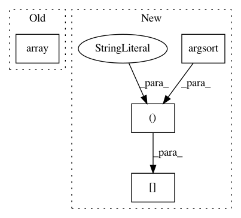

2562f136420d61d3a1c9861876ebc6028125a160,scipy/linalg/_interpolative_backend.py,,idz_reconid,#Any#Any#Any#,986
Before Change
Reconstructed matrix.
:rtype: :class:`numpy.ndarray`
B = np.array(B, copy=False, dtype="complex128", order="F")
if proj.size > 0:
return _id.idd_reconid(B, idx, proj)
else:
P = idd_reconint(idx, proj)
After Change
B = np.asfortranarray(B)
if proj.size > 0: return _id.idz_reconid(B, idx, proj)
else: return B[:,np.argsort(idx)]
def idz_reconint(idx, proj):
Reconstruct interpolation matrix from complex ID.
In pattern: SUPERPATTERN
Frequency: 3
Non-data size: 4
Instances
Project Name: scipy/scipy
Commit Name: 2562f136420d61d3a1c9861876ebc6028125a160
Time: 2013-07-04
Author: inform@tiker.net
File Name: scipy/linalg/_interpolative_backend.py
Class Name:
Method Name: idz_reconid
Project Name: theislab/scanpy
Commit Name: 88993d67308a08ae226ef23fb05b2f69ffcb0890
Time: 2020-12-03
Author: ivirshup@gmail.com
File Name: scanpy/get.py
Class Name:
Method Name: obs_df
Project Name: scipy/scipy
Commit Name: 2562f136420d61d3a1c9861876ebc6028125a160
Time: 2013-07-04
Author: inform@tiker.net
File Name: scipy/linalg/_interpolative_backend.py
Class Name:
Method Name: idd_reconid